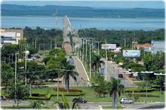

Tocantins é um estado localizado na região Norte do Brasil, criado em 1988, sendo um dos mais jovens do país. Sua capital é Palmas, uma cidade moderna e planejada, que se destaca por sua arquitetura e urbanismo inovadores. Tocantins possui uma grande diversidade de paisagens, incluindo cerrado, rios, lagos e áreas de floresta, o que o torna um lugar muito bonito e cheio de vida. A economia do estado é baseada na agricultura, na pecuária e na produção de commodities, além de ter potencial para o turismo, especialmente com suas belezas naturais e parques ambientais. Tocantins também é conhecido por sua cultura vibrante, com festas tradicionais e manifestações culturais que refletem a diversidade da região.
